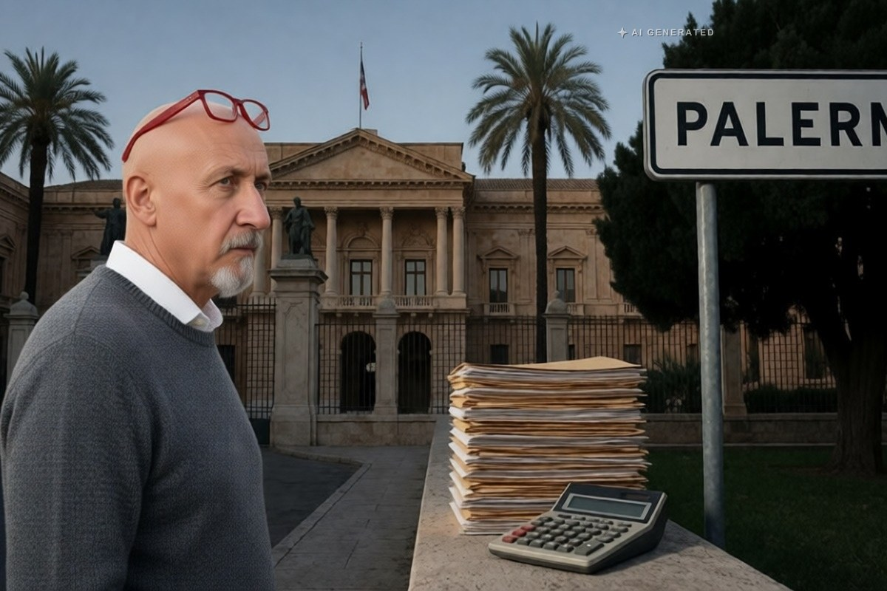

Sicilia · 6 novembre 2026
Sanità siciliana in rosso per 650 milioni, Schifani minaccia i manager

Il disavanzo stimato sui conti al 30 giugno è sei volte quello dell'anno scorso. Una direttiva del presidente della Regione ordina misure di contenimento e l'avvio delle procedure per i direttori generali inadempienti.
di Franco Zanghì
Sul tavolo della Presidenza della Regione c'è un numero che pesa più di tutti: 650 milioni di euro. È il disavanzo stimato della sanità siciliana per quest'anno, calcolato sui conti delle aziende al 30 giugno. L'anno scorso era di 104 milioni.
Che cosa prevede la direttiva
Renato Schifani ha firmato una direttiva indirizzata all'assessore alla Salute, Daniela Faraoni, e al dirigente della Pianificazione strategica: misure per ridurre il disavanzo, una relazione immediata e l'avvio delle procedure di decadenza per i direttori generali che non raggiungono l'equilibrio dei conti. Con le correzioni, la Regione punta a scendere intorno ai 400 milioni. Sul tavolo c'è anche l'Azienda Zero, che dovrebbe accentrare gli acquisti ma che per ora non ha né una struttura né tempi definiti.
Il presidente della Regione lo ha messo per iscritto: «Gli obiettivi assegnati sono impegni precisi e ciascun manager sarà chiamato a rispondere del proprio operato».
La direttiva chiede inoltre una ricognizione della spesa per il personale, dei contratti e degli acquisti di beni e servizi, che sono le voci su cui i conti delle aziende sanitarie si muovono di più. L'obiettivo dichiarato è riportare il disavanzo entro un valore che la Regione possa coprire senza interventi straordinari sul bilancio, evitando le misure automatiche che scattano quando il deficit sanitario resta scoperto, a partire dall'aumento delle aliquote fiscali regionali.
La minaccia non è nuova
Già nell'agosto del 2024 Schifani aveva annunciato che i manager che non raggiungevano gli obiettivi sarebbero andati tutti a casa, prima ancora della scadenza del mandato. E secondo ilSicilia, a luglio le valutazioni dei direttori generali erano ancora ferme al 2020. Nel frattempo il disavanzo stimato è passato dai 104 milioni dell'anno scorso ai 650 di quest'anno.
Il punto
Quei manager li ha scelti la Regione. E allora le domande vengono da sole: chi doveva controllare, in questi due anni? E se il buco cresce a questa velocità, la responsabilità è solo di chi gestisce le aziende, o anche di chi le ha affidate? Una direttiva che minaccia la decadenza è utile soltanto se, questa volta, la valutazione arriva davvero.
C'è poi la partita dell'Azienda Zero, annunciata come lo strumento che dovrebbe accentrare gli acquisti e ridurre i costi: finché resta senza struttura e senza un calendario, il risparmio che le viene attribuito è una previsione, non una voce di bilancio.
Fonti
- Quotidiano Sanità, «Sicilia. Disavanzo Asl da 650 milioni, Schifani ordina la stretta sui conti», 6 novembre 2026
- LiveSicilia, «Disavanzo nella sanità, diktat di Schifani: manager a rischio decadenza», 6 novembre 2026
- BlogSicilia, «Buco da 650 milioni nella sanità, verso il siluramento dei manager», 6 novembre 2026
- PalermoToday, «Stretta sui conti della sanità, Schifani: i manager che non raggiungono gli obiettivi decadranno»
La cifra di 650 milioni è una stima costruita sui conti delle aziende sanitarie al 30 giugno 2026 e sarà rivista con il consuntivo di fine anno. Il dato sulle valutazioni ferme al 2020 è riportato da ilSicilia.